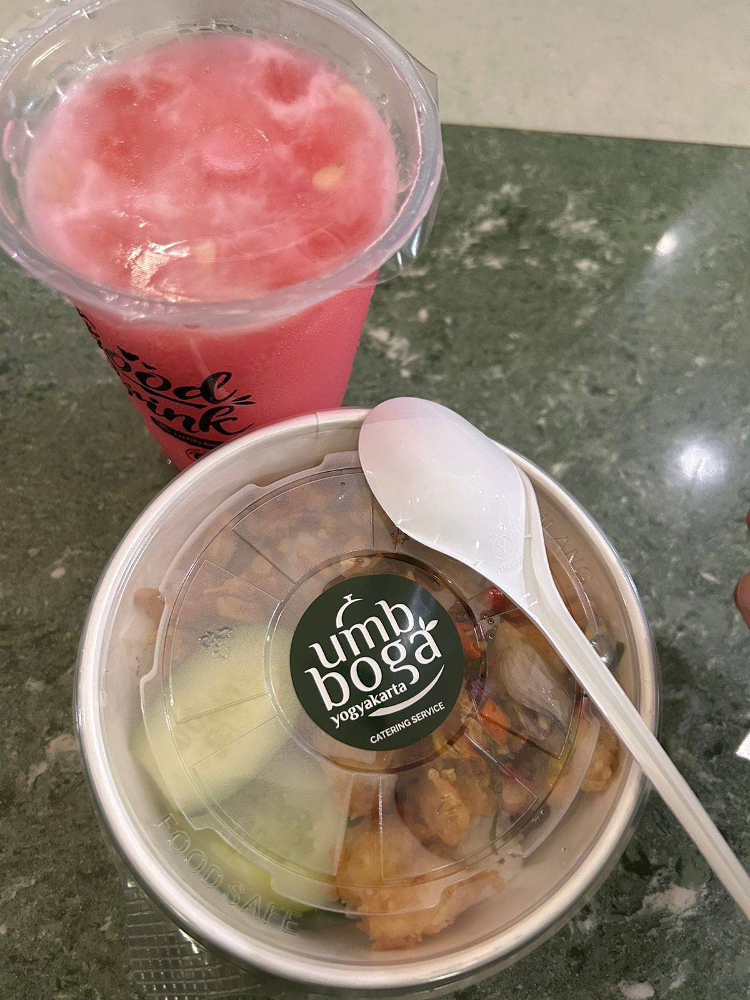

PRK PDW 02
Deskripsi
Menu takjil umy hari ke 9 adalah ricebowl sambal matah dan ayam, minumannya es buah. Pada hari ke-9, UMY menyajikan hidangan takjil yang lezat dan menyegarkan. Ricebowl sambal matah dan ayam adalah hidangan utama yang terdiri dari nasi, ayam yang dimasak dengan bumbu sambal matah yang khas, dan berbagai sayuran segar. Hidangan ini memberikan rasa yang gurih dan pedas yang akan memanjakan lidah Anda. Selain itu, minuman es buah yang segar dan manis akan memberikan kesegaran setelah menikmati hidangan utama. Kombinasi antara hidangan utama dan minuman ini akan membuat takjil Anda menjadi lebih istimewa dan memuaskan. Nikmati takjil yang lezat ini di UMY hari ke-9!